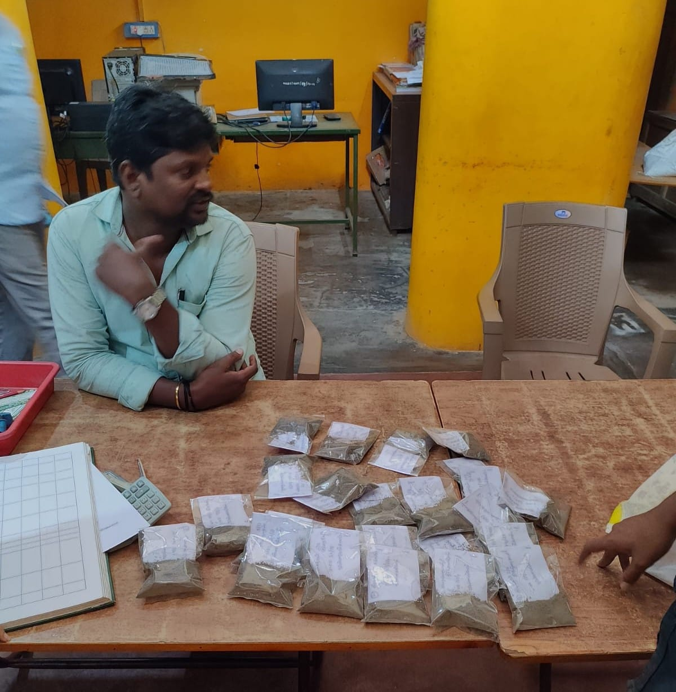

""இந்த படம் ஒரு பயனர் நட்பு வலைத்தளம் மூலம் அணுகப்பட்ட மண் பரிசோதனை அறிக்கைகளின் துடிப்பான செயல்விளக்கத்தை பதிவு செய்கிறது. ஊட்டச்சத்து குறைபாடுகள் மற்றும் பொருத்தமான கரிம திருத்தங்களின் அவசியம் குறித்து கிராமவாசிகள் மதிப்புமிக்க நுண்ணறிவுகளைப் பெறுகிறார்கள். இயற்கை விவசாய முறைகளை வழிநடத்துவதிலும், மண்ணின் ஆரோக்கியம் மற்றும் பயிர் உற்பத்தித்திறனை உறுதி செய்வதிலும் மண் பரிசோதனையின் பங்கை செயல்விளக்கம் அடிக்கோடிட்டுக் காட்டுகிறது. வலைத்தளம் மூலம் மண் பரிசோதனை அறிக்கைகளை எளிதாக அணுகுவதற்கும் விளக்குவதற்கும் கிராமவாசிகளுக்கு தகவலறிந்த முடிவுகளை எடுக்க அதிகாரம் அளிக்கிறது"
"விண்ணமங்கலத்தில் நிலையான விவசாயத்தைத் தேடுவதில் ஒரு முக்கியமான படியை இந்த படம் பதிவு செய்கிறது - மண் மாதிரிகளை சோதனைக்காக ஒரு ஆய்வகத்திற்கு வழங்குதல். மண் ஆரோக்கியம் மற்றும் பயிர் உற்பத்தித்திறனை மேம்படுத்துவதில் கிராம மக்கள் ஒன்றிணைந்துள்ளனர், கிராமம் முழுவதும் பல்வேறு இடங்களிலிருந்து மண் மாதிரிகளை விடாமுயற்சியுடன் சேகரித்துள்ளனர். கவனமாக பெயரிடப்பட்டு தொகுக்கப்பட்ட மாதிரிகள், தங்கள் மண்ணின் ஊட்டச்சத்து நிலை மற்றும் சாத்தியமான வரம்புகள் குறித்த மதிப்புமிக்க நுண்ணறிவுகளைப் பெறுவதற்கான சமூகத்தின் கூட்டு முயற்சிகளை பிரதிநிதித்துவப்படுத்துகின்றன"
Team7 Public Policy
கிராமத் தலைவர் திரு.திருநாவுக்கரசு அவர்களுடன்
- S Yeswanth Balaje
- Gagan Khatri
- Santodh Reddy Allala
- Dhathresh Sunkara
- Vishnu Vardhan Pasupuleti